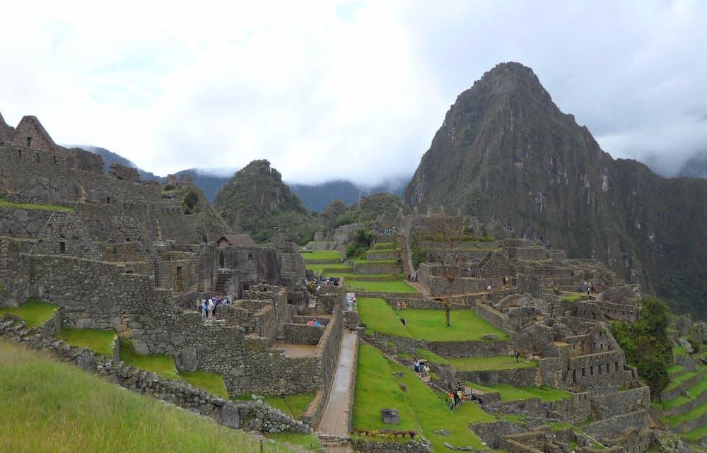
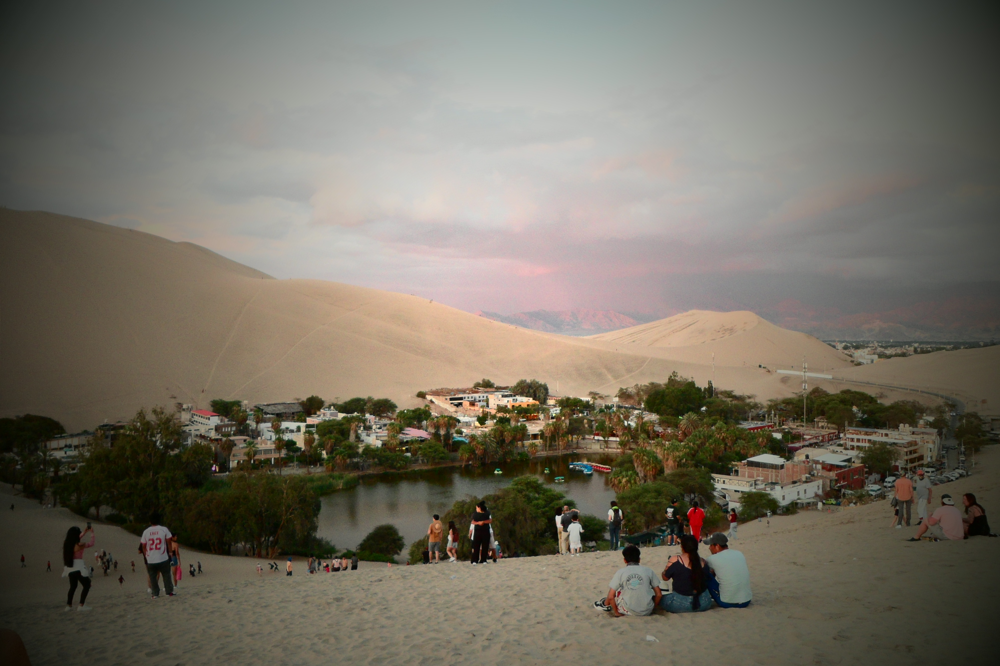
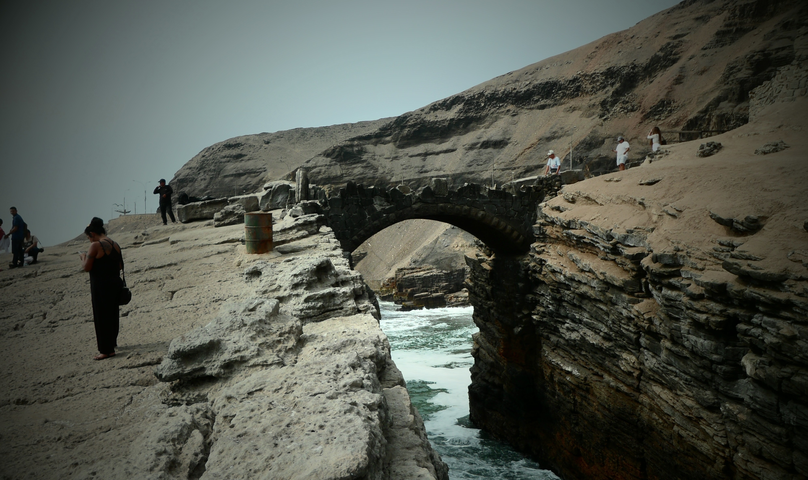
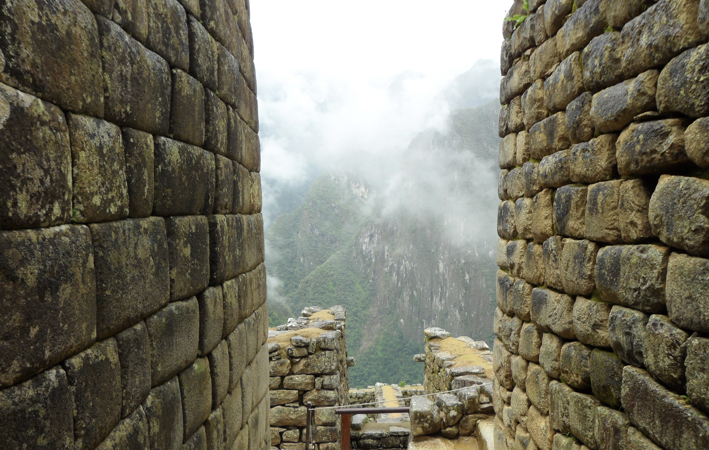
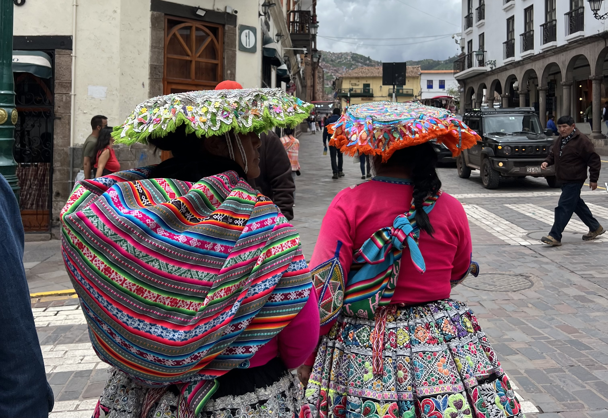
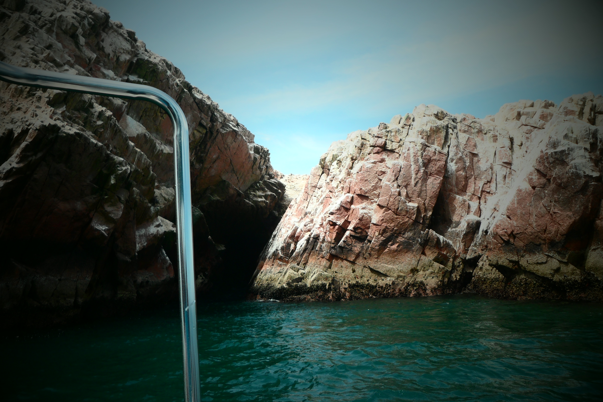

Bedste serværdigheder i Peru
Opdag Peru fra Lima, Cusco, Paracas, Huacachina & Machu Picchu
Lima er Perus pulserende hovedstad og en perfekt start på din rejse. Byen er kendt som Sydamerikas gastronomiske centrum, Lima byder på spændende kvarterer som Barranco med kunst og livemusik, og en smuk kystlinje ud mod Stillehavet
Cusco var engang hovedstad i Inkariget og er i dag en af Perus mest fascinerende byer. Her mødes historie og nutid i brostensbelagte gader, gamle templer og koloniale bygninger.
Paracas er kendt for sin vilde natur og fantastiske dyreliv. Her kan du tage på bådtur til Ballestas-øerne og opleve søløver, pingviner og tusindvis af fugle helt tæt på
Forestil dig en oase omgivet af kæmpe sandklitter, det er Huacachina. Her kan du prøve sandboarding eller tage på hæsblæsende buggy-ture gennem ørkenen.
Ingen rejse til Peru er komplet uden et besøg til Machu Picchu. Denne ikoniske inkaby, gemt højt i Andesbjergene, er et af verdens mest imponerende arkæologiske steder. Uanset om du vandrer dertil via Inka-stien eller tager toget, er oplevelsen intet mindre end magisk.
Læs mere
Galleri af billeder fra Peru



